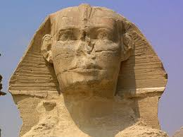
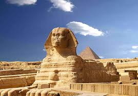
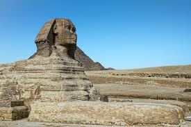

Sfinxul
Khephren (2509-2484 î.Hr.), al patrulea faraon al Dinastiei a IV-a, fiul lui Kheops, a clădit la Gizeh o piramidă, a doua ca mărime după cea a lui Kheops (143 m înătlțime, 215 m lățime la bază). Templul funerar din estul piramidei era legat, printr-un drum, de templul din vale, care impresionează prin arhitectura sa masivă și austeră, din granit. Mai multe statui în mărime naturală, ale lui Khephren, au ajuns până în zilele noastre.
Piramida a lui Khephren a fost construită foarte aproape de Marea Piramidă a lui Kheops, unde platoul este puțin ridicat. Astfel, deși înălțimea reală a edificiului este cu trei metri mai mică decât cea a piramidei lui Kheops, el pare mai mare. Se proiectase acoperirea întregii piramide cu granit extras din carierele de la prima cataractă, dar, înainte ca lucrarea să fie terminată, după o domnie de 18 ani, regele a murit.
Lângă drum a fost sculptat, într-un pinten stâncos, marele Sfinx din Gizeh. Această statuie colosală care înfățișează un leu uriaș a fost scoasă direct din masa stâncoasă a podișului libian. Capul cu înfățișare omenească este acoperit cu „nemes” (una dintre coafurile faraonului:mijlocul frunții este decorat cu o cobră, simbol al Egiptului de Jos, iar pe cap de află vulturul, simbolul Egiptului de Sus). Nu se cunoaște semnificația religioasă exactă a acestei statui în timpul Regatului Vechi și numai cu o mie de ani mai târziu, acest colos a fost asimilat de egipteni cu zeul Harmakhis („Horus-al-Orizontului”) . Corpul îi măsoară 45 m în lungime, iar înălțimea capului se ridică la 21 m de la nivelul postamentului. La origine, avea obrazul vopsit în roșu, acoperămânul capului în alb, iar ochii, negri cu globurile albe. În general, egiptenii îl numeau „Huu” („chip cioplit”), dar grecii au descoperit în el o asemănare cu sfinxul mitic, leul cu cap de femeie care, conform legendei, a terorizat cetatea Tebei din Beoția. De aceea i-au dat, cu totul greșit, numele acesta care, în ciuda faptului că e mascul și nu femelă, i-a rămas pentru totdeauna.
Din înfăptuirile lui Mykerinos (cca. 2480-2462 î.Hr.), fiul lui Khephren, faraon al cărui drept la tron a fost contestat, cea mai importantă rămâne a treia piramidă de la Gizeh. Aceasta este mult mai mică la bază decât celelalte două (66, 40 m înălțime, 108 m lățime la bază), dar foarte fastuos concepută, de vreme ce avea să fie placată cu un granit din care încă se mai păstrează plăci pe rândurile inferioare.
Edificiile megalitice lăsate în urmă de faraoni, piramidele, precum și sfinxul marchează în mod clar un simbol al puterii suverane de drept divin asupra supușilor. Cantitatea resursele materiale folosite, numeroasa forță de muncă, precum și durata de timp a ridicării piramidelor vor impresiona întotdeauna, în special datorită faptului că acestea rezistă până în zilele noastre, timp de mai bine de 4.500 de ani.